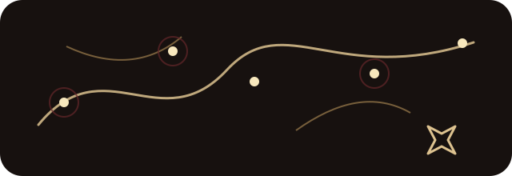

Снег · праздник · ожидание
Зимние легенды
Щелкунчики, морозные стражи и тихое волшебство зимнего дома.
Смотреть жителей
Коллекции и главы
Каждая коллекция — отдельный мир со своей палитрой, настроением и законами. Жители связаны общей атмосферой, но не повторяют друг друга.
Снег · праздник · ожидание
Щелкунчики, морозные стражи и тихое волшебство зимнего дома.
Мох · грибы · древние тропы
Образы, найденные под кронами и среди историй, которые рассказывает лес.
Драконы · хранители · предания
Существа из времён, когда граница между легендой и памятью была тоньше.
Фольклор · песни · чудеса
Знакомые архетипы и редкие сказочные существа в авторском прочтении.
Хроника мира
Коллекция — это не рубрика каталога, а дверь в отдельную сказочную область.

Общая система оставляет общую систему компонентов, но меняет настроение: цвет, плотность, темп повествования, крупность фотографий и способ показать статус Жителя.
Создать своего Жителя